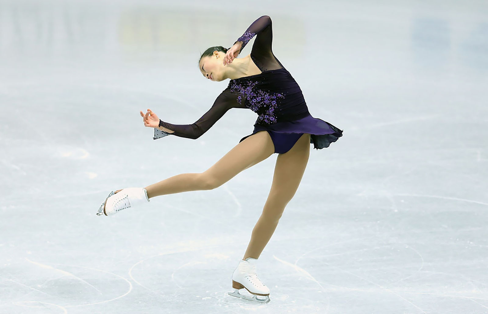

HI YOUNG EXPLORERS!! I am Kim and welcome to my personal travel blog. Over the past two years, I have explored around Eastern Canada. However, I aspire to travel much farther in the upcoming years. My dream is to one day, to visit every continent on the planet.
Get to know me
My interests
Aside from the dreams of travelling abroad, there are many activities I enjoy engaging in. A majority of my favourite lesuire activities are those involving some type of learning or active aspect. Personally, I am the type of person that enjoys to be involved in social activities such as the ones shown below.

Ice Skating

Walking through the Garden
Watching Movies